Hulu Digital Museum
从朋友的真实葫芦收藏出发，把手机照片变成可以自由策展的数字展品。
ROLE数字展陈、藏品上架与家具皮肤设计
Art & Art History
Toronto × Sheridan
I turn ideas into visual experiences, interactive prototypes and AI-native workflows.
Visual × Product × AI
艺术的感知力，与把想法做出来的行动力。
五个切面，认识我的设计实践。
从朋友的真实葫芦收藏出发，把手机照片变成可以自由策展的数字展品。
ROLE数字展陈、藏品上架与家具皮肤设计

围绕宠物切换、日常记录和健康档案，把温暖的视觉语言变成可操作的手机原型。
ROLEUX 流程、界面与组件设计；AI 辅助原型实现
《眼中山河》是一支63秒的AI品牌广告片，为2026上海国际AIGC创新大赛参赛作品。
ROLE概念、AIGC 影像与视觉叙事

以葫芦为核心意象的中式传统文化品牌，主张"传承古今之美，艺术与自然的完美融合"。
ROLE品牌识别与视觉系统设计
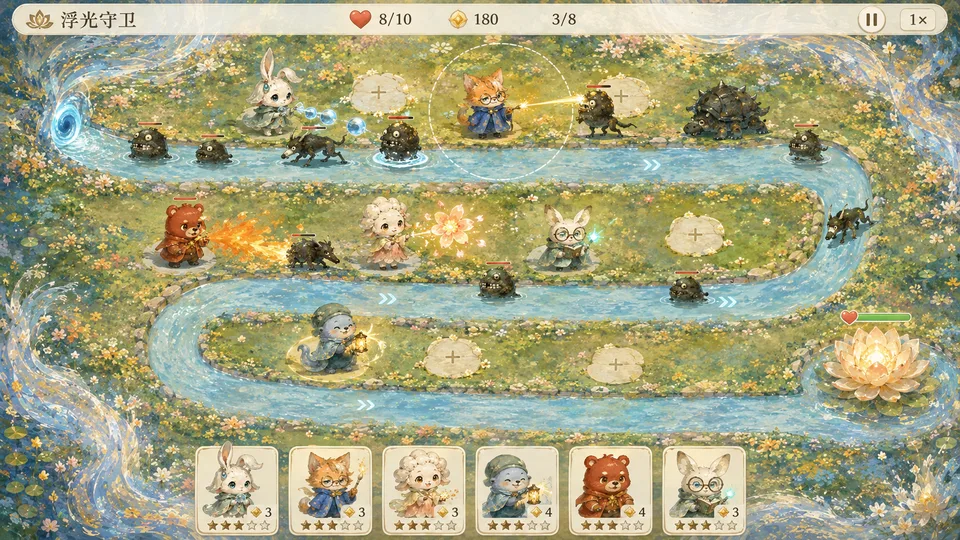
把角色、场景、经济系统和玩家反馈接成可玩的产品，而不是停在一张游戏概念图。
ROLE玩法与体验策划、视觉指导、AI 辅助构建
不只是展示，也可以亲手体验。
从朋友的真实葫芦收藏出发，把手机照片变成可以自由策展的数字展品。
ROLE数字展陈、藏品上架与家具皮肤设计
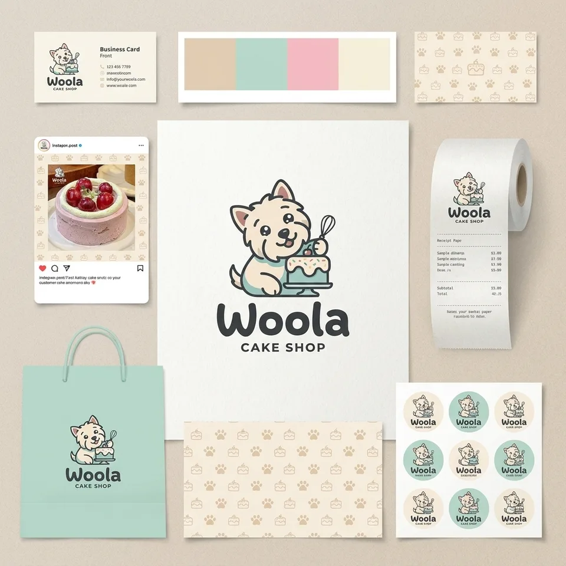
「Woola」是一个面向年轻女性客群的精品蛋糕咖啡店，以一只圆嘟嘟的小狗为品牌 IP。
ROLE品牌识别与视觉系统设计
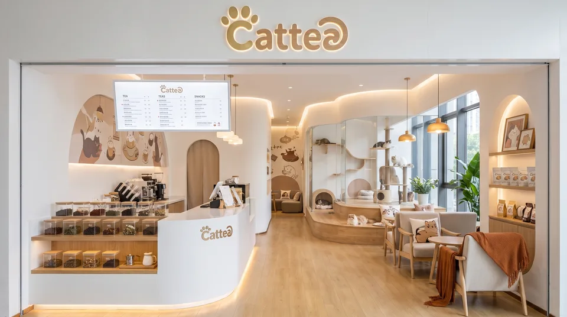
「Cattea」是一只蜷在茶杯里喝奶茶的小白猫，主打「把茶杯当作猫窝」的暖系治愈体验。
ROLE品牌识别与视觉系统设计
围绕宠物切换、日常记录和健康档案，把温暖的视觉语言变成可操作的手机原型。
ROLEUX 流程、界面与组件设计；AI 辅助原型实现
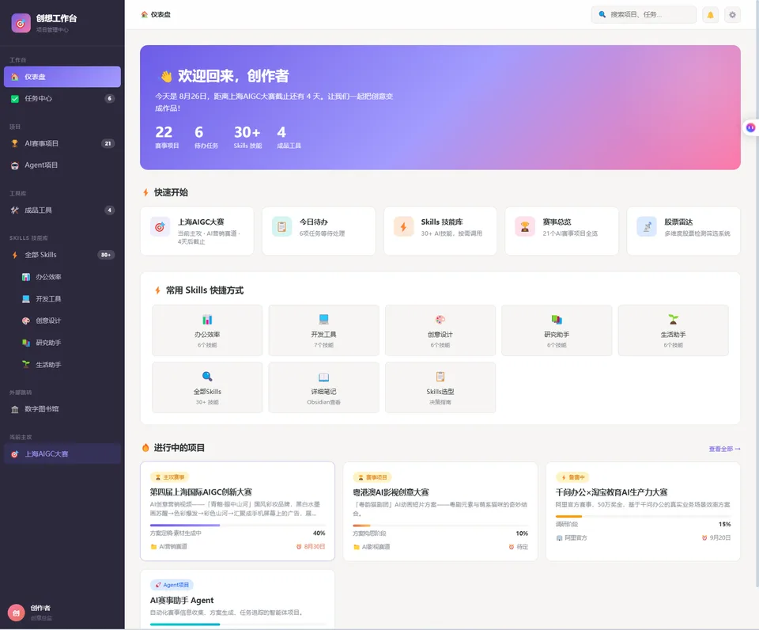
不再只收藏工具链接，而是把创作项目、任务、Skills 与 Agent 入口连到具体的下一步。
ROLE个人工作流、信息架构与界面设计
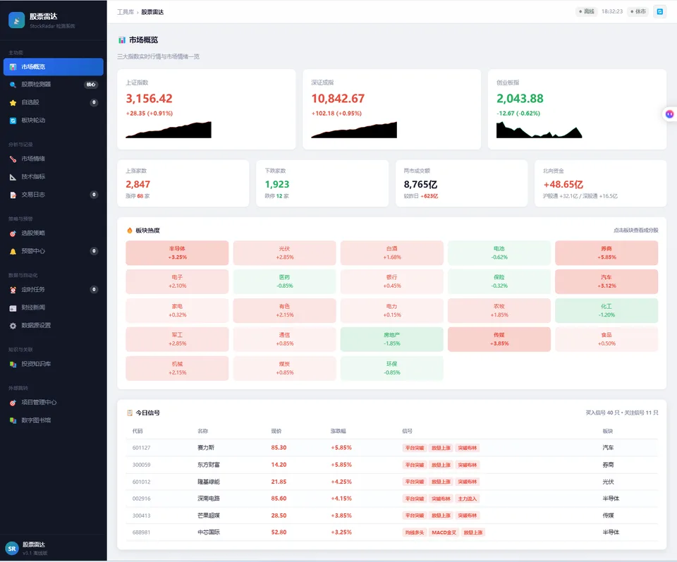
以市场概览为起点，组织指数、板块与个股信息，构建个人股票研究工作台。
ROLE个人系统与界面设计
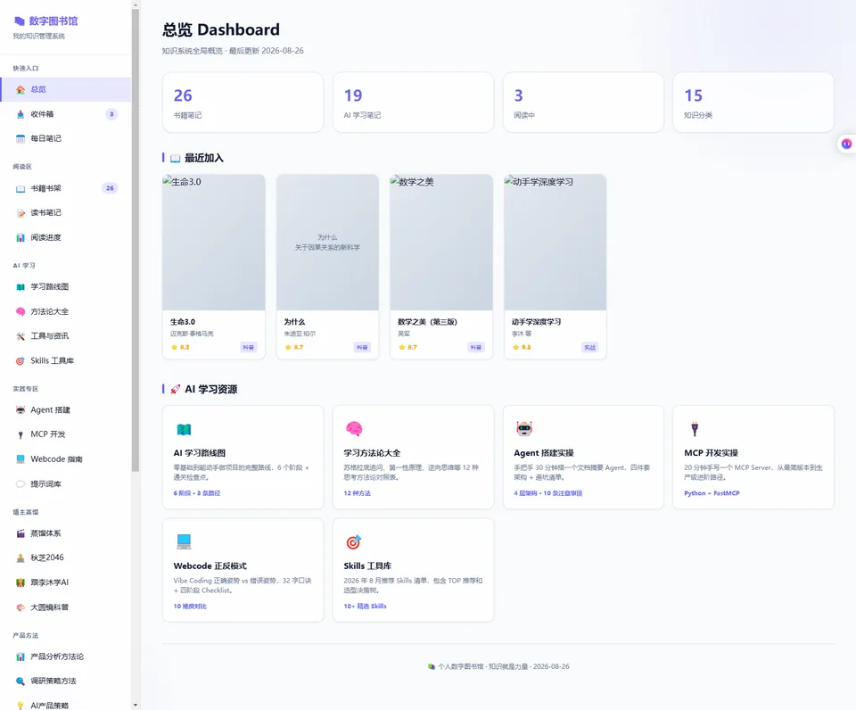
将书籍、阅读笔记与 AI 学习资源归入一个知识空间，连接阅读、学习与实践。
ROLE个人系统与界面设计
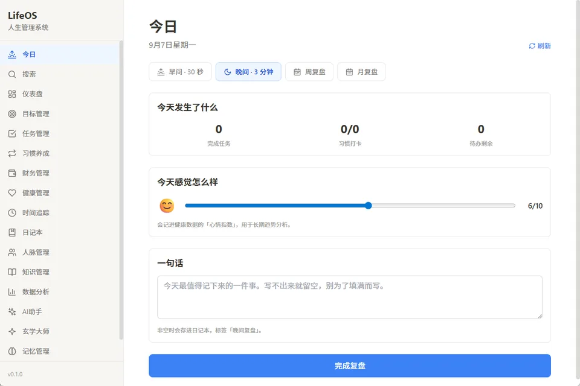
围绕自己的记录、任务和复盘需求，探索多个 AI 助手如何进入持续使用的生活工作流。
ROLE个人系统构思、信息架构与界面设计

这是一场关于"旅行收纳美学"的视觉盛宴。
ROLE概念、AIGC 影像与视觉叙事
《眼中山河》是一支63秒的AI品牌广告片，为2026上海国际AIGC创新大赛参赛作品。
ROLE概念、AIGC 影像与视觉叙事
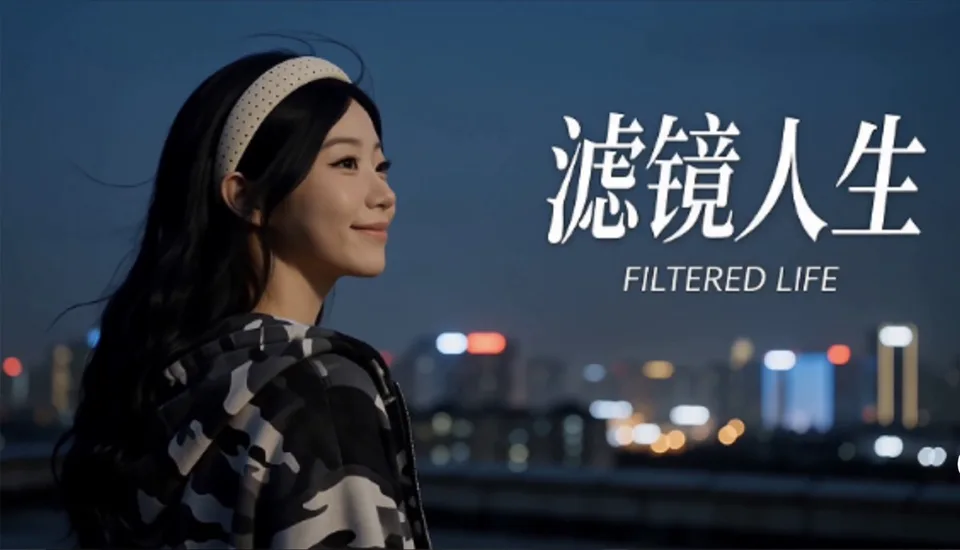
《滤镜人生》是一支53秒的AI叙事短视频。
ROLE概念、AIGC 影像与视觉叙事
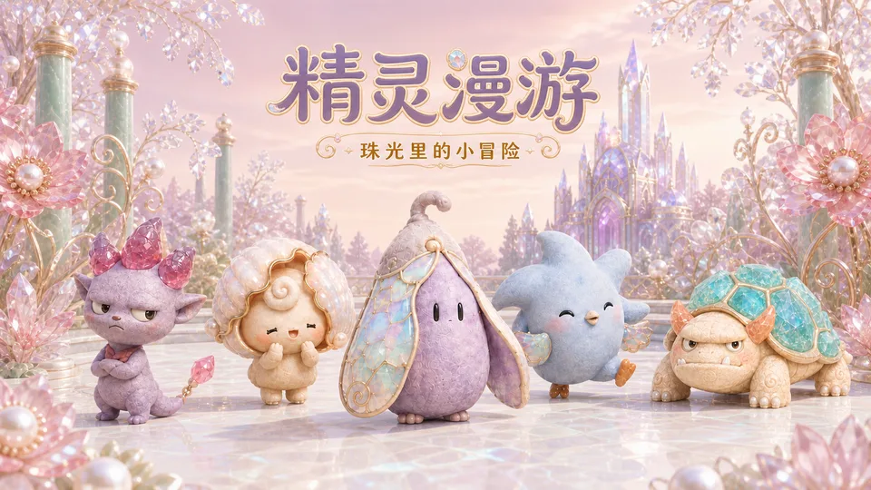
五位原创精灵，六片珠宝风景。自由选关，在跳跃、战斗与收集中展开横屏冒险。
ROLE交互体验与 AI 辅助构建
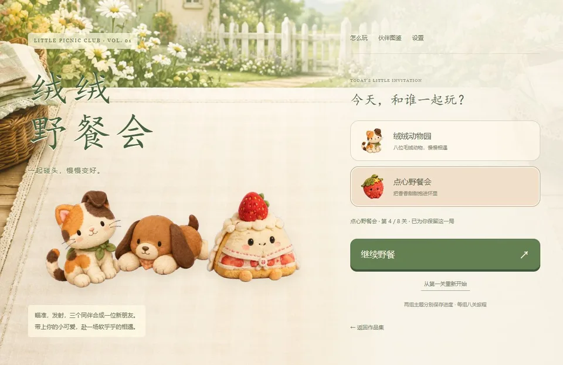
动物与点心，两场软乎乎的野餐。瞄准发射、三个合一，各自开启八关旅程。
ROLE交互体验与 AI 辅助构建
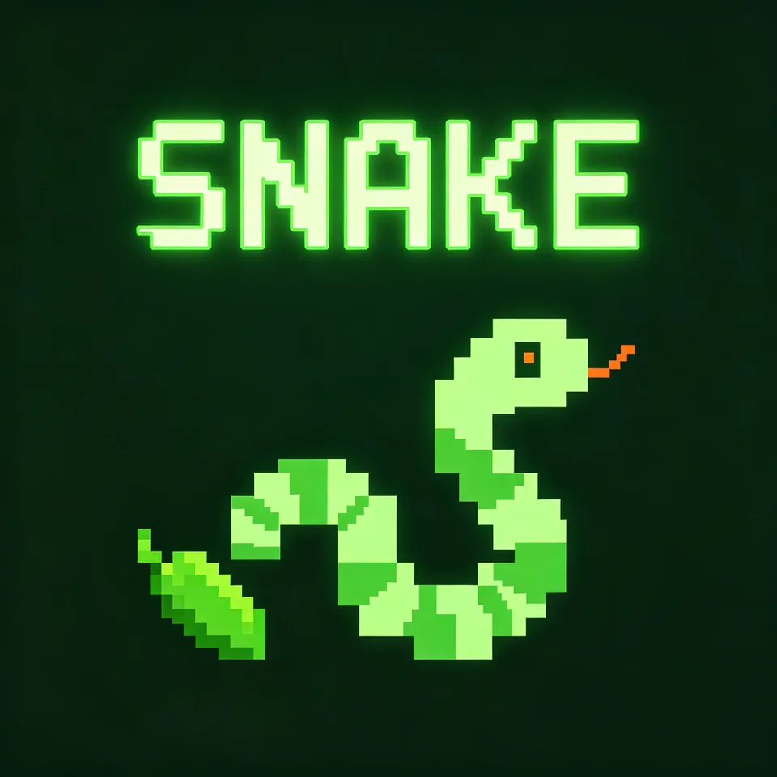
一局复古街机小挑战。控制小蛇收集食物，避开碰撞，刷新自己的最高分。
ROLE交互体验与 AI 辅助构建
把角色、场景、经济系统和玩家反馈接成可玩的产品，而不是停在一张游戏概念图。
ROLE玩法与体验策划、视觉指导、AI 辅助构建

探索"暗黑自然主义"在数字手绘环境下的线性表达。
ROLE字体、版面与印刷视觉设计
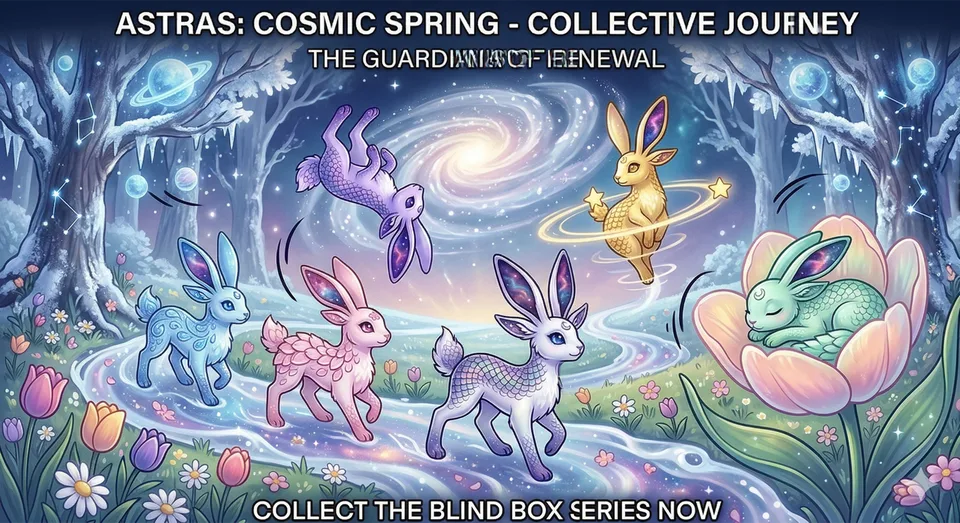
在当代都市文明的坚硬外壳下，灵魂对未知的向往，本质上是对情感寄托与精神自愈的渴求。
ROLE角色设定与视觉延展
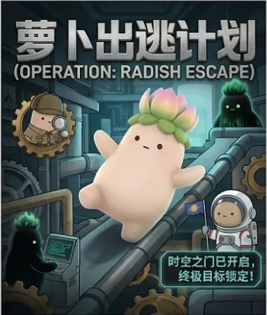
在名为"Greenhouse"的未来数字实验室中，原生精灵 SYLVA 觉醒了自我意识。
ROLE角色设定与视觉延展
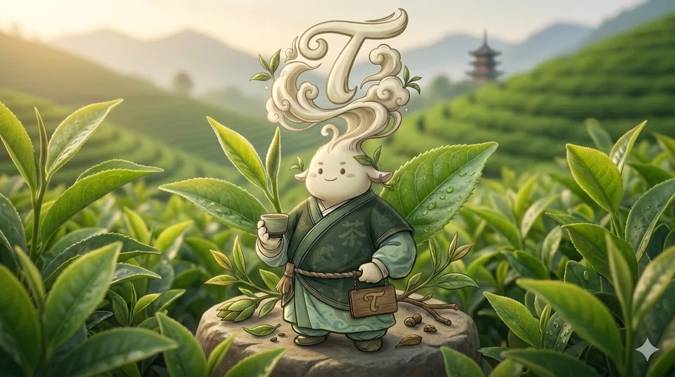
"万物皆可茶，凡事皆可言"——茶言言是一个拟人化的茶业 IP 角色。
ROLE角色设定与视觉延展
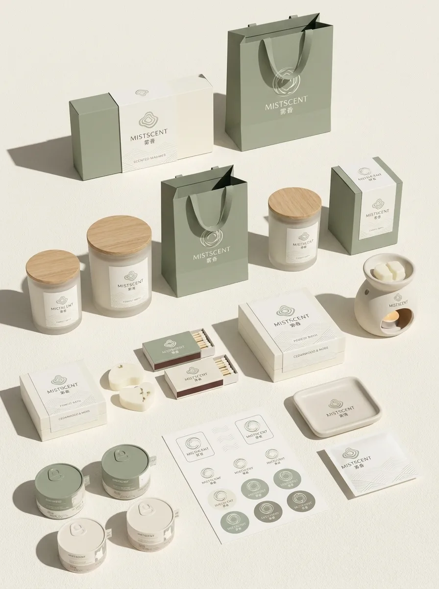
面向「气味疗愈」人群的精品香薰蜡烛品牌。
ROLE品牌识别与视觉系统设计
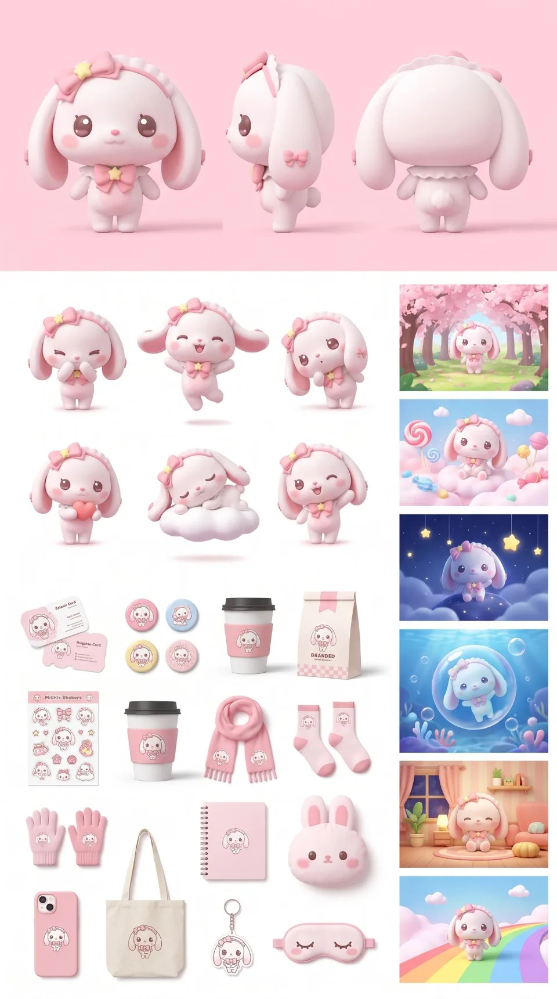
粉系治愈 IP「巧巧兔 Kalio」——一只粉色兔耳、头戴蝴蝶结的女孩角色。
ROLE角色设定与视觉延展

反差萌哈士奇 IP「旺财财」——外形是凶萌的灰白哈士奇，却总是叼着金链子、吐着舌头笑。
ROLE角色设定与视觉延展

「奥德赛 · 英雄之旅」是一款以古希腊史诗为背景的卡牌对战游戏 UI 系统。
ROLE个人系统与界面设计
以葫芦为核心意象的中式传统文化品牌，主张"传承古今之美，艺术与自然的完美融合"。
ROLE品牌识别与视觉系统设计
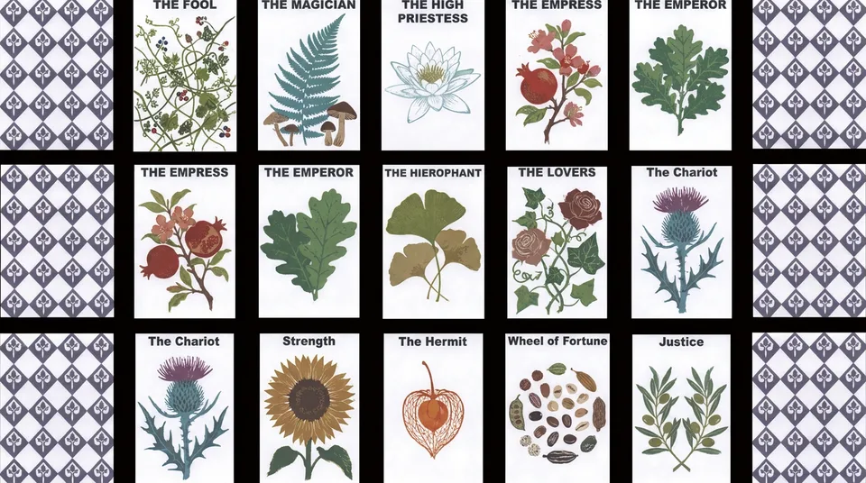
一套以植物诠释塔罗牌大阿卡纳的印刷卡片系列。
ROLE字体、版面与印刷视觉设计